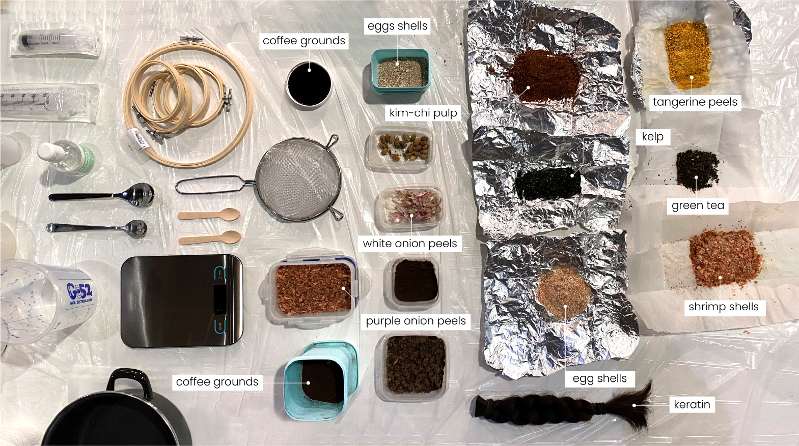
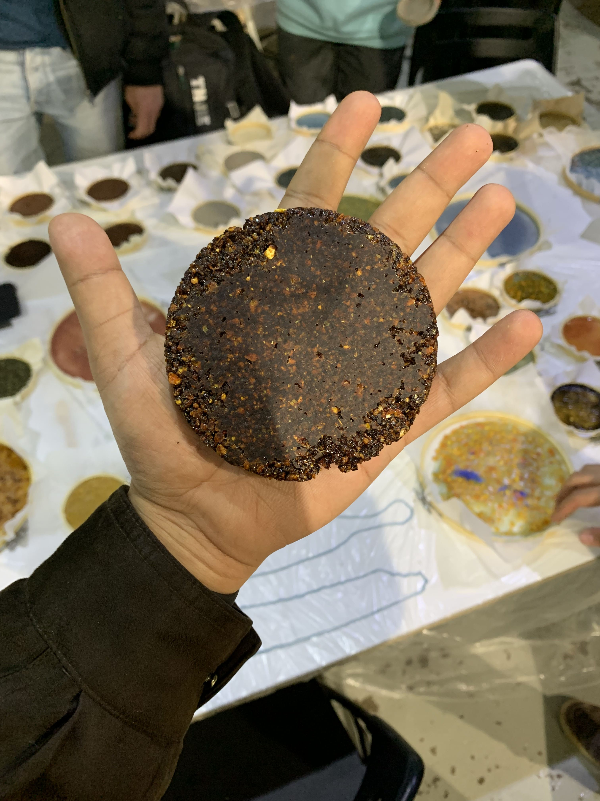
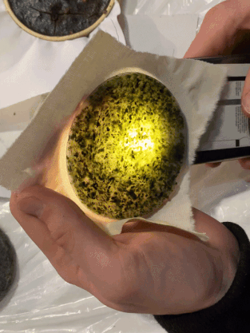
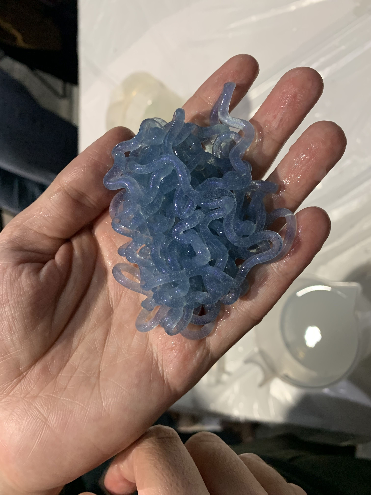
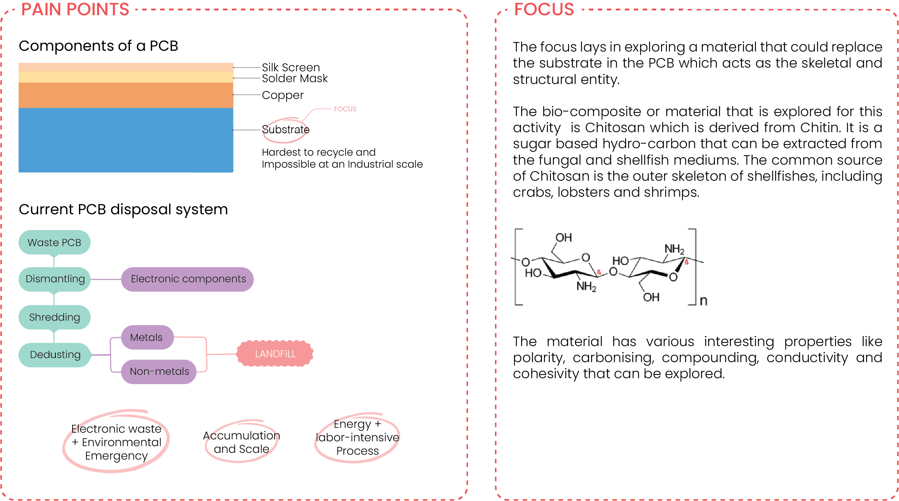
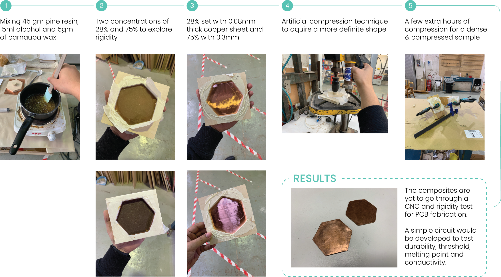
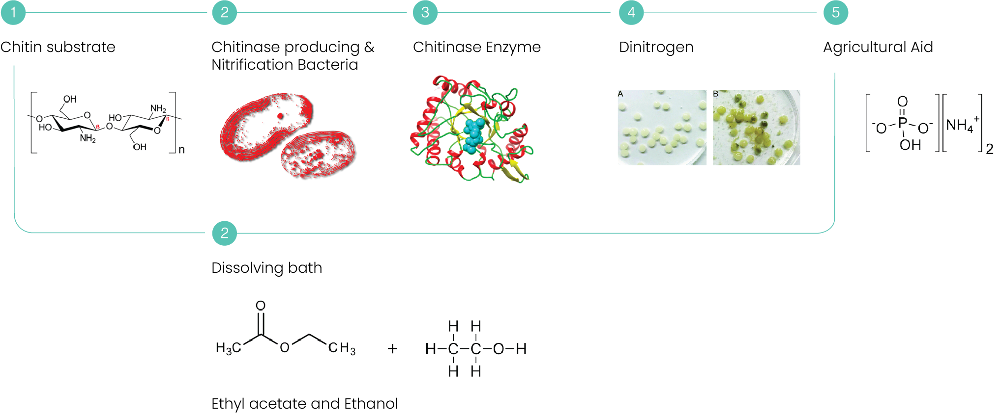
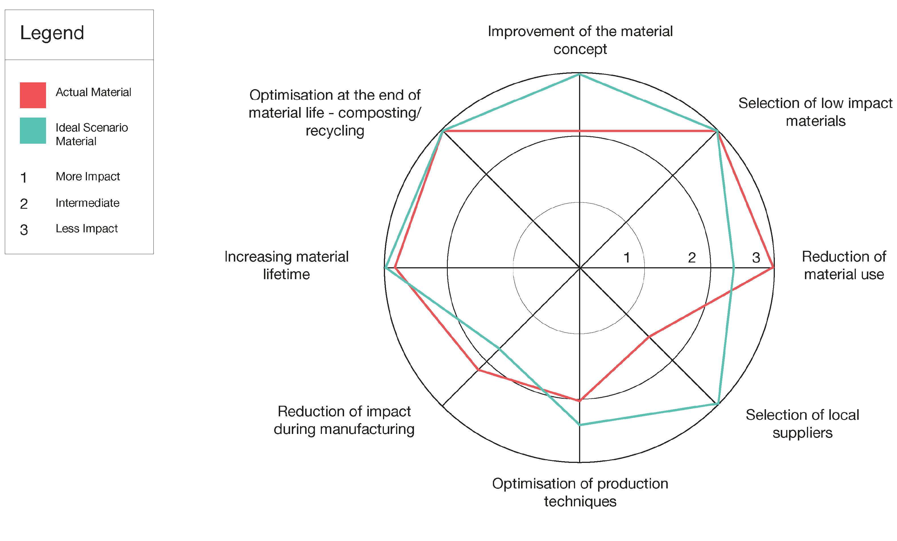

TERM 1
Remixing Materials
The module started with an introduction to the projects ideated by Laura Campos. Interesting parts of the first week lied around topics like bacterial dying, sand vitrification and the polarity of a material. The more polar the atoms of a material are, the easier it is to degrade. Angel and I started having discussions on how different materials could be utilised to explore ceramics and live artefacts that grow using auxitic structures and materials like egg shells, mycelium and cyanobacteria. Various ideas and leads like ‘ceramics that grow’, ‘the future wardrobe’, ‘bio-electricals’ and ‘extended organelles’ started popping up. Few of the materials that interested me and sparked my thought process were cellulose, chitin, kelp derivatives and Plastiglomerate.

Fig. 11.1 The collection of materials brought by the group
The second week started with remixing and explorations of the materials from kitchen waste. The group activity explored various interesting extracts like tangerine peels, green tea leaves, purple and white onion peels, shrimp shells etc. The first sample incorporated the agar agar base, tangerine peels and gold mica. The reason being grainy texture, medium density and earthy colour palette.
The second sample was an alginate based extrusion technique. The material is ejected through a syringe in an ionised solution/medium which makes it retain its shape as soon as it comes in contact with the solution. This gives rise to formation of yarn and thread like structures which can later be dehydrated and utilised to weave various other fabrics and materials.
The third iteration explored pine resin, carnauba wax, combined with dehydrated kimchi pulp. The result was an interestingly dense and brittle sample which shed bits and pieces upon physical stress.

Fig. 9.3 First Iteration of the Arduino setup and the array used for the final prototype
For a certain time of my life, I have been mildly infuriated with the short-lived lifespan of everyday electronics in the 21st century. Interestingly enough, I found myself indulged in a conversation with one of my colleagues about how the electronics of the future might look like if we developed further on better alternatives for the epoxy substrates in the usual printed circuit boards. This substrate is exactly what makes it hard and almost impossible at an industrial scale to recycle PCBs. Concerning this objective, the final phase of the material exploration revolved around the context to experiment and create a PCB out of bio-waste.
The material or the component centric to my exploration was Chitosan, which is a linear polysaccharide. It is made by treating the chitin shells of shrimp and other crustaceans with an alkaline substance. Chitin is the second most abundant polysaccharide in nature, only after cellulose. The material was explored briefly in the first phase in the an impure form in the shape of shrimp shells. The polar properties of the material make it easier to be bonded and degraded, which makes it very customisable.

Process

Decomposition Cycle

Impact & Strategy Wheel

You can find the entire documentation on research and exploration here.